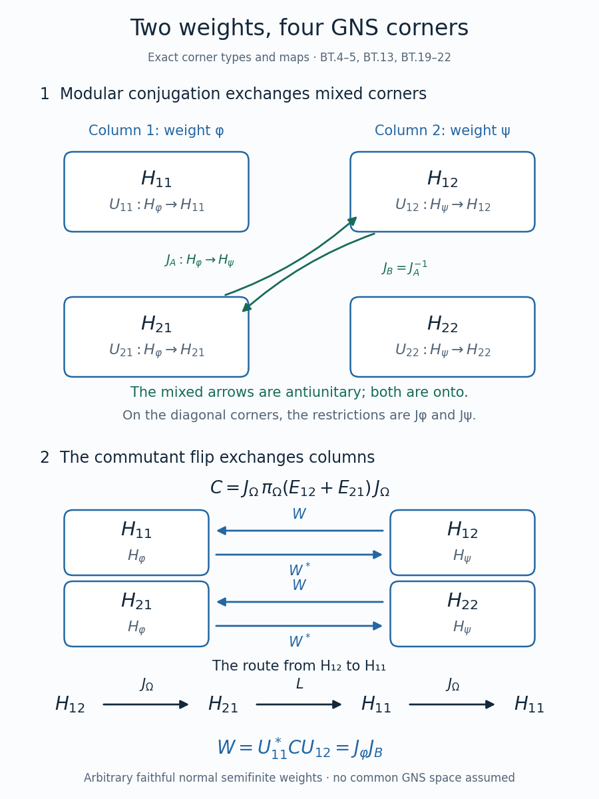

Balanced weights and relative Tomita blocks
Two faithful normal semifinite weights need not have the same GNS space. A weight on two-by-two matrices puts both spaces into one Hilbert space without identifying them prematurely. Its four corners show exactly where each closed operator acts. Conjugating a row exchange by the modular conjugation then gives a unitary between the original GNS representations.
Let \(M\) be an arbitrary von Neumann algebra, and let \(\varphi,\psi\) be faithful normal semifinite weights. No countability, finite-mass or separability hypothesis is imposed. Inner products are linear in the first variable. Write \(\mathfrak n_\omega=\{x:\omega(x^*x)<\infty\}\) and \(\mathfrak a_\omega=\mathfrak n_\omega\cap\mathfrak n_\omega^*\). The zero algebra has zero GNS spaces and all the formulas have their zero-space interpretation.
The written inputs are the GNS construction, WG-006–008, the finite-star weight Hilbert algebra, WH-09–11, the conjugate-linear adjoint, TC-03, polar decomposition with inverse domains, TC-08–09, the commutant theorem, MF-05, and the four-corner graph-core proof, SI-05. The ordinary relative GNS specialization, SI-12, identifies the same mixed operators with spatial derivatives. Each application below retains its stated domain.
Four GNS corners and their finite ideals
Put \(N=M_2(M)\), let \(E_{ij}\) be its matrix units with entry \(1_M\), and define \[ \Omega(X)=\varphi(X_{11})+\psi(X_{22})\qquad(X\in N_+). \tag{BT.1} \] The proof GC-03 gives a faithful normal semifinite weight, including when its value at the identity is infinite. For any matrix \(X=(x_{ij})\), \[ \Omega(X^*X)=\sum_{i=1}^2\varphi(x_{i1}^*x_{i1}) +\sum_{i=1}^2\psi(x_{i2}^*x_{i2}). \tag{BT.2} \] Consequently \[ \begin{aligned} \mathfrak n_\Omega &=\begin{pmatrix}\mathfrak n_\varphi&\mathfrak n_\psi\\ \mathfrak n_\varphi&\mathfrak n_\psi\end{pmatrix},\\ \mathfrak a_\Omega &=\begin{pmatrix}\mathfrak a_\varphi&I\\I^*&\mathfrak a_\psi\end{pmatrix}, &I&=\mathfrak n_\varphi^*\cap\mathfrak n_\psi. \end{aligned} \tag{BT.3} \] These are entrywise descriptions of vector spaces. In particular the two off-diagonal domains are different mixed finite ideals; neither is asserted to be a two-sided ideal.
The GNS coordinates. Set \(\omega_1=\varphi\), \(\omega_2=\psi\). For each pair of indices define on a dense domain \[ U_{ij}\Lambda_{\omega_j}(x)=\Lambda_\Omega(xE_{ij}), \qquad x\in\mathfrak n_{\omega_j}. \tag{BT.4} \] The square of its norm is \(\omega_j(x^*x)\). Two different entry spaces are orthogonal: in the product \((yE_{kl})^*(xE_{ij})\), a diagonal term can survive only when \(k=i\) and \(l=j\). Polarization gives the same conclusion for arbitrary finite vectors. Formula (BT.2) and the density of \(\Lambda_\Omega(\mathfrak n_\Omega)\) now show that the maps extend to unitaries onto four orthogonal closed spaces \(H_{ij}\) whose sum is \(H_\Omega\).
We use column order throughout: \[ \mathcal U(\xi_{11},\xi_{21},\xi_{12},\xi_{22}) =\sum_{i,j}U_{ij}\xi_{ij},\qquad H_\Omega\simeq H_\varphi\oplus H_\varphi\oplus H_\psi\oplus H_\psi. \tag{BT.5} \] Thus a coordinate's Hilbert space is determined by its column, not its row.
Why the corners preserve the graph. Let \(R_{ij}\) be the orthogonal projection onto \(H_{ij}\). In the notation of SI-05 it is \(L_iQ_j\), where left multiplication selects a row and right multiplication by \(E_{jj}\) selects a column. For a finite-star matrix, adjunction transposes its entry. Hence \[ S_\Omega R_{ij}\xi=R_{ji}S_\Omega\xi \quad(\xi\in D(S_\Omega)). \tag{BT.6} \] Here is the reason the equality holds on the closed domain. Compress a net from the full finite-star graph core approximating \(\xi\) in both \(H_\Omega\) and the norm of its Tomita image. Both coordinate projections are contractions. The compressed vectors therefore converge in the graph norm, and closedness gives (BT.6). Applied to a vector already in \(H_{ij}\), this also proves that the compressed finite-star vectors form a graph core for that corner. This is precisely the argument proved for complementary projections in SI-05; WH-09–11 supply the full weight finite-star core to which it applies. Hilbert-space density alone would not prove this graph-core assertion.
Closed mixed maps, adjoints and polar factors
Start with the densely defined conjugate-linear maps \[ \begin{aligned} A_0\Lambda_\varphi(x)&=\Lambda_\psi(x^*), &x&\in\mathfrak n_\varphi\cap\mathfrak n_\psi^*,\\ B_0\Lambda_\psi(y)&=\Lambda_\varphi(y^*), &y&\in\mathfrak n_\psi\cap\mathfrak n_\varphi^*. \end{aligned} \tag{BT.7} \] The preceding graph-core argument, equivalently SI-12, proves that they are closable. Let \(A=\overline{A_0}:H_\varphi\to H_\psi\) and \(B=\overline{B_0}:H_\psi\to H_\varphi\), each with its actual closed domain. Density follows as well: the dense domain of \(S_\Omega\) projects into each corner domain by (BT.6), so that corner domain is dense; its compressed finite-star graph core is then dense in the corner Hilbert space. No identification of the two GNS spaces was used.
Because \(S_\Omega\) is a closed involution on its domain, its two exchanged corner restrictions are inverse to one another. In particular \[ B=A^{-1},\qquad \operatorname{ran}A=D(B),\qquad \operatorname{ran}B=D(A). \tag{BT.8} \] These equalities concern actual ranges, which are dense and need not be the whole target space. Both maps are injective.
The operator and its adjoint. Transport all operators by \(\mathcal U\) from (BT.5). The four-corner graph decomposition gives \[ S_\Omega= \begin{pmatrix} S_\varphi&0&0&0\\0&0&B&0\\0&A&0&0\\0&0&0&S_\psi \end{pmatrix},\qquad D(S_\Omega)=D(S_\varphi)\oplus D(A)\oplus D(B)\oplus D(S_\psi). \tag{BT.9} \] Every vector in the domain has the displayed four domain components by (BT.6). Conversely four such components sum to a vector in the domain, since it is a linear space and the sum is finite. This proves equality of domains, not merely an equality on the initial finite-star vectors.
The adjoint convention of TC-03 is \(\langle T\xi,\eta\rangle=\langle T^*\eta,\xi\rangle\). Test this pairing separately on each of the four component domains in (BT.9). The first test requires \(\eta_{11}\in D(S_\varphi^*)\), the second requires \(\eta_{12}\in D(A^*)\), the third requires \(\eta_{21}\in D(B^*)\), and the fourth requires \(\eta_{22}\in D(S_\psi^*)\). Their adjoint vectors sum to the unique vector representing the full pairing. It follows that \[ S_\Omega^*= \begin{pmatrix} S_\varphi^*&0&0&0\\0&0&A^*&0\\0&B^*&0&0\\0&0&0&S_\psi^* \end{pmatrix},\qquad D(S_\Omega^*)=D(S_\varphi^*)\oplus D(B^*)\oplus D(A^*)\oplus D(S_\psi^*). \tag{BT.10} \] This derivation checks both conjugate linearity and the domain; a formal matrix transpose would not suffice.
Define positive self-adjoint injective operators \[ P=A^*A\text{ on }H_\varphi,\qquad Q=B^*B\text{ on }H_\psi. \tag{BT.11} \] Indeed (BT.9–10) identify them with reducing restrictions of the positive self-adjoint \(\Delta_\Omega=S_\Omega^*S_\Omega\). Explicitly, \[ \begin{aligned} \Delta_\Omega&=\operatorname{diag}(\Delta_\varphi,P,Q,\Delta_\psi),\\ D(P)&=\{\xi\in D(A):A\xi\in D(A^*)\},\\ D(Q)&=\{\eta\in D(B):B\eta\in D(B^*)\},\\ D(\Delta_\Omega)&=D(\Delta_\varphi)\oplus D(P)\oplus D(Q)\oplus D(\Delta_\psi). \end{aligned} \tag{BT.12} \] In particular positivity and self-adjointness are conclusions from the closed operator and its product domain, rather than assumptions about an algebraic product of initial maps.
Polar decomposition on the correct spaces. SI-05 shows that \(J_\Omega H_{ij}=H_{ji}\). On diagonal corners its restrictions are \(J_\varphi\) and \(J_\psi\). Define \[ J_A=U_{12}^*J_\Omega U_{21}:H_\varphi\longrightarrow H_\psi, \qquad J_B=U_{21}^*J_\Omega U_{12}:H_\psi\longrightarrow H_\varphi. \tag{BT.13} \] They are onto antiunitaries, and \(J_\Omega^2=1\) gives \(J_B=J_A^{-1}\). Thus \[ J_\Omega= \begin{pmatrix} J_\varphi&0&0&0\\0&0&J_B&0\\0&J_A&0&0\\0&0&0&J_\psi \end{pmatrix}. \tag{BT.14} \] Restrict the domain equalities \(S_\Omega=J_\Omega\Delta_\Omega^{1/2}=\Delta_\Omega^{-1/2}J_\Omega\) and \(S_\Omega^*=J_\Omega\Delta_\Omega^{-1/2}=\Delta_\Omega^{1/2}J_\Omega\), proved in TC-08–09, to the mixed corners. The spectral square roots and inverse square roots reduce those corners by (BT.12). We obtain \[ \begin{aligned} A&=J_AP^{1/2}=Q^{-1/2}J_A,&D(A)&=D(P^{1/2}),\\ B&=J_BQ^{1/2}=P^{-1/2}J_B,&D(B)&=D(Q^{1/2}),\\ A^*&=J_BQ^{-1/2}=P^{1/2}J_B,&D(A^*)&=D(Q^{-1/2}),\\ B^*&=J_AP^{-1/2}=Q^{1/2}J_A,&D(B^*)&=D(P^{-1/2}). \end{aligned} \tag{BT.15} \] Every product in a row has the domain at its right. For example \(Q^{-1/2}J_A\) has domain \(\{\xi:J_A\xi\in D(Q^{-1/2})\}=D(P^{1/2})\); it is not claimed to act everywhere. The polar factors \(J_A,J_B\) are antiunitaries between two spaces. Calling either one a conjugation on a single space would require an additional identification.
For completeness the inverse spectral relation is \[ Q=J_AP^{-1}J_B,\qquad D(Q)=J_A D(P^{-1}). \tag{BT.16} \] To see this with its domain, restrict \(J_\Omega\Delta_\Omega J_\Omega=\Delta_\Omega^{-1}\) to \(H_{21}\). It gives \(J_BQJ_A=P^{-1}\); conjugating by the everywhere defined mutually inverse antiunitaries yields (BT.16). TC-08 proves that this antiunitary transport preserves positivity and self-adjointness. The same argument with real spectral square roots supplies the domain transport in (BT.15). No bounded inverse of \(P\) or \(Q\) is required.
A commutant flip gives the GNS unitary
The left representation has an elementary matrix form. For \(X=(x_{ij})\in M_2(M)\), multiplication of a matrix having one finite entry gives \[ \pi_\Omega(X)= \begin{pmatrix} \pi_\varphi(x_{11})&\pi_\varphi(x_{12})&0&0\\ \pi_\varphi(x_{21})&\pi_\varphi(x_{22})&0&0\\ 0&0&\pi_\psi(x_{11})&\pi_\psi(x_{12})\\ 0&0&\pi_\psi(x_{21})&\pi_\psi(x_{22}) \end{pmatrix}. \tag{BT.17} \] For example \(X(xE_{1j})=x_{11}xE_{1j}+x_{21}xE_{2j}\); each product remains in the finite left ideal. The GNS multiplication identity proves (BT.17) on a dense sum of such vectors, and boundedness of the two representations extends it to the whole space.
Let \[ L=\pi_\Omega(E_{12}+E_{21}),\qquad C=J_\Omega L J_\Omega. \tag{BT.18} \] The matrix units give \(L^*=L\) and \(L^2=1\), so \(L\) exchanges the two rows within each column by (BT.17). The two conjugate-linear factors make \(C\) linear. Antiunitarity and \(J_\Omega^2=1\) give \(C^*=C\) and \(C^2=1\). Finally the commutant theorem MF-05, applied to the full weight Hilbert algebra of \(\Omega\), gives \[ C\in\pi_\Omega(N)',\qquad H_{12}\xrightarrow{\ J_\Omega\ }H_{21} \xrightarrow{\ L\ }H_{11} \xrightarrow{\ J_\Omega\ }H_{11}. \tag{BT.19} \] Each arrow is onto its indicated corner: this follows from (BT.13–14) for \(J_\Omega\) and from the row exchange for \(L\). Therefore \(C\) maps \(H_{12}\) unitarily onto \(H_{11}\). Its coordinate form is \[ W=U_{11}^*CU_{12}=J_\varphi J_B: H_\psi\longrightarrow H_\varphi. \tag{BT.20} \] This is an onto linear unitary. For \(x\in M\), the operator \(\pi_\Omega(\operatorname{diag}(x,x))\) leaves both corners invariant, acts there as \(\pi_\psi(x)\) and \(\pi_\varphi(x)\), and commutes with \(C\). Consequently \[ W\pi_\psi(x)=\pi_\varphi(x)W\qquad(x\in M). \tag{BT.21} \] This constructs the intertwiner; no common Hilbert-space representation was assumed in defining \(A\) or \(B\).
One can also read off the entire commutant flip. Since \(C\) commutes with \(\pi_\Omega(E_{21})\), its map from \(H_{22}\) to \(H_{21}\) has the same coordinate \(W\) as its map from \(H_{12}\) to \(H_{11}\). Self-adjointness supplies the inverse maps. Thus \[ C=\begin{pmatrix} 0&0&W&0\\0&0&0&W\\W^*&0&0&0\\0&W^*&0&0 \end{pmatrix}. \tag{BT.22} \] Directly following the three arrows from \(H_{22}\) gives \(J_BJ_\psi\), so the equality of these two restrictions additionally proves \(J_\varphi J_B=J_BJ_\psi\). The figure displays the corner spaces and this same column exchange; its arrows are maps between Hilbert spaces, not identifications of their vectors.

Original illustration: OpenAI Codex (AI). The upper panel gives the exact corner types in (BT.4–5) and the mixed antiunitaries in (BT.13). The lower panel follows (BT.19–22). The three-step route is a composition read left to right. Reproducible source: render-balanced-gns-corners.py.
The support qualification. If \(\psi\) is merely normal semifinite, it can be nonfaithful. Then (BT.1) need not be faithful and the preceding full antiunitary block argument does not apply unchanged. Let \(e=s(\psi)\). The proof in GC-01–02 constructs an isometry from \(H_\psi\) onto \(J_\varphi\pi_\varphi(e)J_\varphi H_\varphi\) intertwining \(M\), using the supported faithful corner and its exact Gram identity. That gives the general supported conclusion. Its range need not be all of \(H_\varphi\). A general normal weight is not asserted to become semifinite simply by restricting to its support.
Both relative maps can be unbounded
Let \(M=\ell^\infty(\mathbb N)\), with indices starting at one, and put \[ r_n=\exp((-1)^n n),\qquad \varphi(a)=\sum_{n\geq1}a_n,\qquad \psi(a)=\sum_{n\geq1}r_na_n\quad(a\geq0). \tag{BT.23} \] Both are faithful normal semifinite weights. Faithfulness follows from the positive finite coefficients. For normality, each finite partial sum is a normal positive functional, and the supremum of partial sums commutes with the supremum of an increasing net: both sides are the supremum over the same pairs of indices. The finite-coordinate projections increase to one and have finite weight, so WG-008 gives semifiniteness. Both weights take the value infinity at one.
In function coordinates the GNS spaces are \(\ell^2\) and \(\ell^2(r)\). Finite-support sequences lie in both finite ideals and are dense in those Hilbert spaces. The unitaries to normalized coordinates are \[ V_\varphi\Lambda_\varphi(x)=(x_n),\qquad V_\psi\Lambda_\psi(x)=(\sqrt{r_n}\,x_n), \tag{BT.24} \] with target \(\ell^2\) in each case. Formula (BT.7) becomes \[ \begin{aligned} (A\xi)_n&=\sqrt{r_n}\,\overline{\xi_n}, &D(A)&=\{\xi\in\ell^2:\sum_n r_n|\xi_n|^2<\infty\},\\ (B\eta)_n&=r_n^{-1/2}\overline{\eta_n}, &D(B)&=\{\eta\in\ell^2:\sum_n r_n^{-1}|\eta_n|^2<\infty\}. \end{aligned} \tag{BT.25} \] These are the exact closures. Coordinate convergence proves that each displayed operator is closed. Truncating any vector in its displayed domain to its first \(m\) coordinates converges in the norm squared \(\sum(1+r_n)|\xi_n|^2\) or \(\sum(1+r_n^{-1})|\eta_n|^2\), respectively. Thus finite-support vectors are graph cores. They belong to the original mixed finite domains, which proves both inclusions needed to identify the closures with (BT.25).
Both domains are proper. For \(\xi_{2k}=e^{-k}/\sqrt{k}\), with odd coordinates zero, the ordinary squared norm is finite but \(\sum r_n|\xi_n|^2=\sum_k1/k\) diverges. For \(\eta_{2k-1}=e^{-(2k-1)/2}/\sqrt{k}\), with even coordinates zero, the ordinary squared norm is finite but \(\sum r_n^{-1}|\eta_n|^2=\sum_k1/k\) diverges. Unit coordinate vectors show unboundedness directly: \(\|Ae_{2k}\|=e^k\) and \(\|Be_{2k-1}\|=e^{(2k-1)/2}\).
Testing the adjoint pairing on finite-support vectors shows that \(A^*\) is the same coordinate conjugation followed by multiplication by \(\sqrt{r_n}\), now in the reverse direction, and \(B^*\) uses \(r_n^{-1/2}\) in the forward direction. The pairing is bounded precisely on the weighted domains in (BT.25). Hence the products, with their product domains, are \[ \begin{aligned} P\xi&=(r_n\xi_n),&D(P)&=\{\xi\in\ell^2:\sum_n r_n^2|\xi_n|^2<\infty\},\\ Q\eta&=(r_n^{-1}\eta_n),&D(Q)&=\{\eta\in\ell^2:\sum_n r_n^{-2}|\eta_n|^2<\infty\}. \end{aligned} \tag{BT.26} \] For example the product domain for \(A^*A\) initially asks for both the \(r\) and \(r^2\) sums to be finite; \(r\leq1+r^2\) shows that the latter condition and \(\xi\in\ell^2\) already imply the former. This verifies the domain simplification in (BT.26); the other one uses \(r^{-1}\leq1+r^{-2}\).
In normalized coordinates \(J_A\) and \(J_B\) are coordinate conjugation. Each individual weight also has coordinate conjugation as its closed Tomita involution, with full Hilbert-space domain, since finite-support sequences are a core for that bounded conjugation. Thus \(J_\varphi,J_\psi\) are coordinate conjugation and both individual modular operators equal one. Formula (BT.20) gives the identity map between the two normalized copies of \(\ell^2\).
Returning to function coordinates, the same unitary is \[ W:\ell^2(r)\longrightarrow\ell^2, \qquad W\eta=(\sqrt{r_n}\,\eta_n). \tag{BT.27} \] Its norm identity is exactly \(\|W\eta\|_2^2=\sum r_n|\eta_n|^2\), and its inverse divides coordinates by \(\sqrt{r_n}\). These are everywhere defined unitaries between the indicated weighted spaces. Multiplication by the same coefficients on one fixed unweighted space would instead be unbounded. This is why the Hilbert-space labels and operator domains in the block calculation must be kept.
Source correspondence
M. Takesaki, Theory of Operator Algebras II, VIII.3, printed pages 108–110, constructs the balanced GNS representation, its mixed Tomita blocks and the commutant flip. BT-01–03 give the explicit coordinate calculation with all closed domains, adjoints, inverse spectral domains and the onto intertwiner. The nonfaithful statement of Theorem VIII.3.2 is proved separately at its full supported scope in GC-01–02. BT-04 supplies an additional infinite-weight example with two proper mixed domains. The figure is a new diagram of the maps proved here.